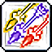

보우마스터는 개선이 필요합니다
옛날 옛적, 보우마스터는 시원한 속사 공격으로, 강력한 지속딜을 선보이는 좋은 캐릭터였습니다. 특히 폭풍의 시는 많은 궁수 유저들이 선망하던 보우마스터의 상징과도 같은 스킬이었죠.
하지만 세월은 흘렀습니다.
스킬 구조는 세월의 풍파를 맞아 꼬이고 꼬였습니다. 파일럿의 손 마저 꼬일 지경입니다.
강력한 지속딜은 지속된 너프로 유명무실해졌으며, 현 메타인 극딜 중시와도 맞지 않습니다.
보우마스터의 극딜은 가히 최하위권이라 봐도 무방합니다. 강력한 지속딜마저 유명무실해진 시점에서, 극딜마저 약하다니.
낡고 지친 보우마스터에게 다시 날개를 달아주세요.
너무 많은 버프
보우마스터는 30초마스터라는 별명을 가지고 있을 정도로 수많은 버프들을 자주 사용해주어야 합니다. 보스전에서 소울 애로우, 보우 부스터, 샤프 아이즈, 피닉스, 메이플 용사, 어드밴스드 퀴버, 잔영의 시, 애로우 레인, 프리퍼레이션, 퀴버 풀버스트 같은 수많은 버프들을 사용하게 되면 버프를 거는데만 10초 가까이 소모됩니다. 일부 버프를 패시브화 해주거나 딜레이를 줄여주면 좋겠습니다.
퀴버 카트리지
보우마스터는 3가지의 화살을 이용합니다. 마법 화살을 이용하면 일정 확률로 추가 피해량을 주는 마법 화살이 발사되고, 흡혈 화살을 이용할 경우 최대 HP의 일정 비율을 회복할 수 있죠. 독 화살을 이용할 경우 상대에게 도트데미지를 줄 수 있습니다.
문제는 각각의 화살들을 상황에 맞게 자유롭게 변경하는것이 힘들다는 것입니다. 보통 보우마스터 유저들은 마법 화살을 고정해 딜량을 늘리거나 흡혈화살을 고정해 생존율을 올립니다. 원하는 화살로 바로바로 고정할 수 있다면 좋겠지만, 속사기인 폭풍의 시는 현재 화살통에 있는 화살을 빠르게 소모시키고 잠깐 방심한 사이에 원하지 않는 화살을 잘못 고정시키는 일이 자주 있습니다.
마법화살을 고정하려 했는데 실수로 독화살이나 흡혈화살이 고정된다면? 퀴버 카트리지의 5차 강화는 마법화살에만 적용되기 때문에 심각한 딜 로스가 생기게 됩니다. 흡혈화살을 고정하려 했는데 실수로 독화살이나 마법화살이 고정된다면? 바로 데스카운트 하나 날리는 것입니다.
원하는 것
우선 어드밴스드 퀴버의 패시브화 입니다. 현재 어드밴스드 퀴버는 30초마다 계속해서 사용해줘야 한다는 문제점을 가지고 있습니다. 어드벤스드 퀴버가 패스브화 된다면 실수로 늦게눌러 원하지 않는 화살이 고정되는 일이 줄어들것입니다.
또한 퀴버 카트리지를 제논의 멀티 모드 링커처럼 원하는 화살로 바로 바꿀 수 있게 해주었으면 좋겠습니다.
작성중
내가 원하는 것 정리
- 어드밴스드 퀴버 온오프화
- 퀴버 카트리지 제논의 멀티 모드 링커화
- 폭시 선딜좀 줄여줘
- 잔영의 시 온오프화
- 에로우 레인 타수 10배 증가
- 폭풍의 시 퍼뎀 9999%로 상향
- 윈드 오브 프레이 쿨타임 삭제
- 보마를 스토리 디폴트 직업으로